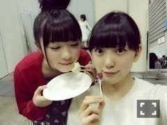
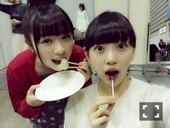
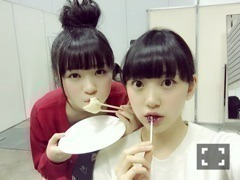

2015/0206Fri満タン→万端
今日の朝
私が残しておいた大好きな大好きな
安納芋が今朝冷蔵庫に入っていなくて...
楽しみにしていたものだし
食べた記憶もないから
あれおかしいなぁって思って
探していたら
何と私の姉がソファに座って
優雅に安納芋を食べてたの‼︎
それからふてくされていたら
755見たお姉ちゃんが焦って
わざわざ買ってきてくれました笑
もう許したよ(,,•﹏•,,)笑
仲良しだけどよく喧嘩するの。
しょうもない？事で振り回して
ごめんなさい
綺麗な貝みっけ‼︎
小さい貝殻も見つけたの♪
穴開けてネックレスにしようかな〜
休憩時間、必死に屈んで貝殻を
探していたら
松村さんにみおたん何してるの？って
言われて
貝を探してるんです！
私は貝になりたい、、
って言ったら
めっちゃ笑ってくれました笑
最近は寒い場所での撮影が多いけど
みんなでギューってしながら
温まって頑張っていますヽ(*・ω・*)ﾉ
太陽？月？
よく分からないけど
なんか丸いものと(｡･ω･｡)
熱いお風呂に浸かる
髪を乾かす
コーヒー牛乳を飲む
歯を磨く
次の日の洋服を決める
0時20分に布団に入る
部屋の電気を消す
とある日の私の家に帰ってから
寝るまでの流れ。
なかなか布団に入ってから
寝れないけど...
寝ても怖い夢を頻繁に見るし...
でもたまにファンタジーチック
で可愛い夢も見ます☆
前は私がお菓子の国で
お菓子を次々に開発してみんなに
未央奈様のお菓子は世界一です！
って言われてなぜか頭の上に
いちご大福を乗せた私がお城の
ベランダで手を振りながら
けらけら笑っていました
よく分からない瞬間を
撮られた
最近私がback numberさん好き
でよく聴くっていう話をブログ
とか755でしていたら
ファンの方が聴いてみたら好きになったよ
ってコメントとかで言って下さって
何か嬉しいです♩
他には
ONE DIRECTION
Mcfly
Blue
Backstreet Boysが好きかな
告知
発売中
◎POKER FACE
◎読売中高生新聞
◎UTB未公開グラビア◎Ray
◎street JACK
◎FLASHスペシャル 2015新年号
◎月刊エンタメ未公開グラビア
◎EYESCREAM
◎日経エンタテインメント！
◎CDでーた
◎グラビアザテレビジョン
◎読売中高生新聞
◎ENTAME
◎2/9発売 BOMB
→初、日奈子とのグラビア！
堀北コンビ♡
TV
◎2/7 伝えてピカッチ
2回目の出演です！
◎2/7 23:30〜0:00 乃木坂46 SHOW！
メイドのコントとオープニングの
コントは白石さんと
出させていただきました！
楽しかった〜♡
頑張ったので見てください！
明日は忙しいですよ(,,•﹏•,,)？
ラジオ
◎2/10〜 全国ファミリーマートにて
深川さんとファミラジを
してきました！
沢山流れると思うので
よろしくお願いします♡
まったり食べ物大好き姉妹♡
以上
大好きなジブリのお店へ
行ってきました！
店内にもジブリの曲が流れていて
もうあまりにも幸せで
ずっと目を輝かせながら
いろんなものを見てきました
特に魔女宅コーナーが素敵♩
トトロとメイちゃん
スタジオジブリの世界が好き。
好きすぎて生まれ変わるならジブリの
登場人物になりたい٩꒰｡•◡•｡꒱۶



大食いシスターズ！
最後に...
みなみ誕生日おめでとう♡♡♡
気合い入れすぎちゃって23:59に
メールしちゃった笑
みなみにはメールしたから
ブログに詳しくは書かないけど...
いつも私のそばにいてくれて
ありがとう。
これからもずっと一緒にいてね(｡･ω･｡)
大好き！
私のシンメはずっとみなみ♪
そして畠中さんの卒業が
発表されました。
可愛がってくださった先輩や
一緒に頑張ってきた同期がいなく
なるのはやっぱり寂しいな...
でも畠中さんが決めた事やもん！
私が何か言った所で変わらないし...
いつも会うたびに未央奈、元気？
どう？って聞いてくださったり
ハグしてきたり可愛い畠中さん。
またご飯行きたいです！
残りの期間、たくさんたくさん
話せたらいいな！
今日は猫の恩返しと
ウォーキングデッド観ようかな♩
明日の握手会も楽しみ！
衣装、何を着よう？
寒いみたいなので暖かくしてきて
下さいね...>_<...
ではではおやすみおな(ヽ´ω`)
2015/02/06 20:54
コメント(615)
お疲れ様( ^_^)
みおな可愛い(//∇//)
明日の握手会、３部に行きます！！
楽しみo(^-^)o
伝えてピカッチ、乃木坂46SHOW楽しみにしてるよ～！
ファミラジも聴くからね♪
みおな可愛い(//∇//)
明日の握手会、３部に行きます！！
楽しみo(^-^)o
伝えてピカッチ、乃木坂46SHOW楽しみにしてるよ～！
ファミラジも聴くからね♪
こんばんは♫
755のことはそのことだったのね！
未央奈お姉ちゃんと喧嘩するんだ(*_*)
なんか意外‼︎笑
なんか重要なことなのかと思って心配しちゃった笑
最近俺夜更かし多くなってきてるよ(°_°)
多いといってもオールとかではないけど。。
次の日辛くなっちゃう(*_*)
backnumberさんは花束聴く♫☆
良い歌>* ))))><
未央奈のオススメも聴いてみよ！
明日のスペシャル個握三部行くね♫
ニット帽被っていきます(o^^o)
楽しみおな♡
尚也⊿(ヽ´ω`) @みさみなみおな
755のことはそのことだったのね！
未央奈お姉ちゃんと喧嘩するんだ(*_*)
なんか意外‼︎笑
なんか重要なことなのかと思って心配しちゃった笑
最近俺夜更かし多くなってきてるよ(°_°)
多いといってもオールとかではないけど。。
次の日辛くなっちゃう(*_*)
backnumberさんは花束聴く♫☆
良い歌>* ))))><
未央奈のオススメも聴いてみよ！
明日のスペシャル個握三部行くね♫
ニット帽被っていきます(o^^o)
楽しみおな♡
尚也⊿(ヽ´ω`) @みさみなみおな
未央奈のふてくされる理由が可愛すぎてやばい。でもその気持ちめっちゃわかるよ。僕もそんなことあったらふてくされるもん。
いつも可愛い未央奈をこれからも応援してるから頑張ってね。握手会行けないけど楽しんでね。
明日資格試験がんばるから応援してね。
いつも可愛い未央奈をこれからも応援してるから頑張ってね。握手会行けないけど楽しんでね。
明日資格試験がんばるから応援してね。
backnumber俺も好き！
俺も兄貴とすごい仲良いよ！
2人とも社会人だけど
気持ち悪いぐらいに
よくじゃれあってます！笑
喧嘩もしないし！！
すごいことがあったんじゃないか
と思って心配したけど解決したなら
よかったです！
未央奈の食べ物への執着心が
すごいなってわかりました。笑
back numberのヒロインて曲
CMでたくさん流れてて
好きになりました！
back number前から好き！
明日のスペシャル握手会
ずっと楽しみにしてた！
だから明日終わっちゃうのが
嫌な気もします！笑
ピカッチもBOMBも
楽しみです！！！
2人とも社会人だけど
気持ち悪いぐらいに
よくじゃれあってます！笑
喧嘩もしないし！！
すごいことがあったんじゃないか
と思って心配したけど解決したなら
よかったです！
未央奈の食べ物への執着心が
すごいなってわかりました。笑
back numberのヒロインて曲
CMでたくさん流れてて
好きになりました！
back number前から好き！
明日のスペシャル握手会
ずっと楽しみにしてた！
だから明日終わっちゃうのが
嫌な気もします！笑
ピカッチもBOMBも
楽しみです！！！
Back Street Boysはまだまだちっちゃかった時にアメリカのラジオでよく流れてたから好き♡
さわやかだし！
さわやかだし！
みおな、コーヒー牛乳のカフェインが安眠を邪魔してるだと思う。
ゆっくり寝て、いっぱい食べて、幸せな笑顔をたくさん見せて下さい。
ゆっくり寝て、いっぱい食べて、幸せな笑顔をたくさん見せて下さい。
怒ってた理由が可愛すぎるwwww
みなみの誕生日だね！なにかプレゼントはあげたの？(^^)
明日みなみに聞いてみようかなぁ～ヽ(・д・)ﾉ
みなみの誕生日だね！なにかプレゼントはあげたの？(^^)
明日みなみに聞いてみようかなぁ～ヽ(・д・)ﾉ
未央奈お疲れ様！
明日で最後(^-^)
しばらく学校に専念するね〜笑
枚数少ないけど楽しめたらいいな♡
たまごちゃん大好き♡
こんばんは
お芋さんで喧嘩ってwww
ついつい以前の乃木どこで明太子でも同じことで喧嘩してたよね
でも喧嘩するくらい仲いいんだよね
お芋さんで喧嘩ってwww
ついつい以前の乃木どこで明太子でも同じことで喧嘩してたよね
でも喧嘩するくらい仲いいんだよね
食べ物のことでよかったー笑
一安心です笑
あ、自分の名前快「かい」っていいます(￣▽￣)笑
貝になりたいっていうからつい反応しちゃった笑
ジブリはやっぱ魔女宅が一番好き！！
一安心です笑
あ、自分の名前快「かい」っていいます(￣▽￣)笑
貝になりたいっていうからつい反応しちゃった笑
ジブリはやっぱ魔女宅が一番好き！！
安納芋だったのね
堀姉妹かわいいね(笑)芋ならいつでも買ってあげるよ(笑)
海の撮影ななみんも一緒だった？？
せいたんは意志が強いと思うし今から何か言ってた変わるってことはないけど残りの活動は今までと変わりなく卒業まで応援し続けようね！
またね！
堀姉妹かわいいね(笑)芋ならいつでも買ってあげるよ(笑)
海の撮影ななみんも一緒だった？？
せいたんは意志が強いと思うし今から何か言ってた変わるってことはないけど残りの活動は今までと変わりなく卒業まで応援し続けようね！
またね！
1Dもうすぐ来日だね！未央奈、会えたらいいね 私は昨日The Vampsのライブ行って来たよ！この時期イギリスから来日するアーティスト多い\(๑•∀•๑)/（笑）
私は昨日The Vampsのライブ行って来たよ！この時期イギリスから来日するアーティスト多い\(๑•∀•๑)/（笑）
みおなこんばんは♪
755での話題はやはり食べ物だったか笑
可愛いな(((o(*ﾟ▽ﾟ*)o)))
ひなことのグラビア楽しみ♪
握手会、券ないから行けないけど頑張ってな♪
またね
755で何に怒ってるのかと思ったらお姉ちゃんに芋食べられたんだね(´-`)
結構楽しみにしてた物食べられるとやだよね（笑）
でも、お姉ちゃん買って来てって優しいね！
寝る前にコーヒー牛乳じゃないけどたまにコーヒー飲むよ！(すんごく甘くするけどね（笑）)
その夢面白いね！
そのお菓子の国行ってみたい！お菓子も食べてみたい！
ジブリあんまり見ないんだよねー...今度見てみる！
トトロなら少し見たことあるかも（笑）
みなみ誕生日おめでとうだね！
フライングでおめでとうメールは面白い（笑）
みなみおな好きだからこれからも仲良くね！
畠中卒業は悲しいけど背中押してあげなきゃね！
残りの時間大切にね！
では、撮影頑張ってね*˙︶˙*)ﾉ"
おやすみおなヾ(ω` )/
結構楽しみにしてた物食べられるとやだよね（笑）
でも、お姉ちゃん買って来てって優しいね！
寝る前にコーヒー牛乳じゃないけどたまにコーヒー飲むよ！(すんごく甘くするけどね（笑）)
その夢面白いね！
そのお菓子の国行ってみたい！お菓子も食べてみたい！
ジブリあんまり見ないんだよねー...今度見てみる！
トトロなら少し見たことあるかも（笑）
みなみ誕生日おめでとうだね！
フライングでおめでとうメールは面白い（笑）
みなみおな好きだからこれからも仲良くね！
畠中卒業は悲しいけど背中押してあげなきゃね！
残りの時間大切にね！
では、撮影頑張ってね*˙︶˙*)ﾉ"
おやすみおなヾ(ω` )/
寒いよね〜ほんと｡ﾟ(ﾟ^ω^ﾟ)ﾟ｡
撮影忙しそう(>_<)
風邪ひかないようにね！
食べ物のことになるとガチになるみおな面白過ぎるwww
お姉ちゃん東京に来てるの？( ´ ω ` )
あ！ねえねえ！みおなと同じニューバランス買ってもいいかな！？♡
いいよって言われる前に買っちゃう♡♡
握手会楽しみ！
学校終わったらマッハで行くね！( °_° )
だいすき〜！
咄嗟の衣装がいいな！
髪型は乃木坂46showのそんなバカなでしてたサイドポニー？？かわからんけどあの髪型がめちゃくちゃ可愛いかった！！！
握手会楽しんでね^ ^
毎日、ご苦労様
新曲の製作期間とかで大変やろうけど頑張ってね！
ずっと応援してます。
連日の撮影お疲れさまー
乃木どこの堀ちゃんの歌声が良かった！
素朴で伸びやかな感じが特に
これでもっとお腹から声出せるようになったら、さらに良くなるよね！
堀ちゃんのもってる独特の雰囲気と可愛らしさに、スキルが上乗せされたらどうなるんだろう…
とか考えるのが楽しい！
乃木どこの堀ちゃんの歌声が良かった！
素朴で伸びやかな感じが特に
これでもっとお腹から声出せるようになったら、さらに良くなるよね！
堀ちゃんのもってる独特の雰囲気と可愛らしさに、スキルが上乗せされたらどうなるんだろう…
とか考えるのが楽しい！
みおなちゃん更新ありがとう！
みおなほんとに食べること大好きだね、お姉ちゃんに安納芋食べられて怒ってるみおながかわいすぎるよ(*´ω｀*)
でも食べ過ぎには気をつけてね笑
みおなほんとに食べること大好きだね、お姉ちゃんに安納芋食べられて怒ってるみおながかわいすぎるよ(*´ω｀*)
でも食べ過ぎには気をつけてね笑
エピソードがかわいすぎる(笑)
明太子のときみたい(笑)
応援してるよー！！
明太子のときみたい(笑)
応援してるよー！！
いつも読みやすいブログでおもしろいです！
みおな様心配したよ笑っ
安納芋食べられたのか～( ・∇・)
かわいいエピソードやね～♪
安納芋食べられたのか～( ・∇・)
かわいいエピソードやね～♪
私、猫の恩返し見たことあるよ〜✧ ٩( ๑•̀o•́๑ )و
私の大大大好きなバロンが出てて、チョーかっこよくて面白かった〜*ଘ(੭*ˊᵕˋ)੭* ੈ✩‧₊˚
れんれん♪
私の大大大好きなバロンが出てて、チョーかっこよくて面白かった〜*ଘ(੭*ˊᵕˋ)੭* ੈ✩‧₊˚
れんれん♪
ほんま未央奈美少女(((o(*ﾟ▽ﾟ*)o)))
見とったら癒される☆
見とったら癒される☆
755心配したよー笑
私もお姉ちゃんいるけどそんな優しくない‼︎みおなちゃんうらやましい✨笑
みなみおな大好きだからこれからも仲良くしてネ
私もお姉ちゃんいるけどそんな優しくない‼︎みおなちゃんうらやましい✨笑
みなみおな大好きだからこれからも仲良くしてネ
堀ちゃん、こんばんは！
お姉さん、いつぞやの明太子のうらみ、よっぽど
怖かったんじゃない？(笑)
！！(゜ロ゜ノ)ノ
お姉さん、いつぞやの明太子のうらみ、よっぽど
怖かったんじゃない？(笑)
！！(゜ロ゜ノ)ノ
ほっちゃーーーん！
755見て心配しちゃったよーヽ(´ー｀)ノ
確かに自分の好きなもの勝手に食べられたら
嫌だよねー笑笑
この時期の安納芋美味しいよねアツアツの！！
めっちゃすき！
今は11thの制作中かな？
寒いところらしいけど頑張ってね(｀･ω･´)ﾉ
明日のSHOW楽しみにしてる！
もちろん録画するよლ(╹◡╹ლ)
BBたろう
(〃^∇^)oお疲れさま～
こんばんは★
今日の755を見た時は、どうしたのかと思って心配しちゃったよ！
食べ物の事だったなんて、安定の未央奈で安心した！笑
明日と明後日の握手会楽しみにしています
おやすみおな
今日の755を見た時は、どうしたのかと思って心配しちゃったよ！
食べ物の事だったなんて、安定の未央奈で安心した！笑
明日と明後日の握手会楽しみにしています
おやすみおな
明日の握手会３部いくね!!
１枚しかないけどみおなのためだけにいきまーす♪
たのしみたのしみ♪
堀ちゃんお疲れ様！
またお姉ちゃんに食べられたか笑
名前書いたほうがええよ！
明日の握手会だけど、2部に遊びにいきますね！
楽しみや〜
またお姉ちゃんに食べられたか笑
名前書いたほうがええよ！
明日の握手会だけど、2部に遊びにいきますね！
楽しみや〜
ブログ更新ありがとう！
明日はバレッタの衣装でポニーテールがいい!
今回は安納芋なんだね(笑)
前回は明太子で形がそっくりなもの同士で(笑)
いつも11時過ぎには布団に入って音楽聞きながら寝るの!
だいたい3時に目が覚めて音楽消してまた寝るのが日課!
明日はいつもに比べて会いに行けないので地方行こうか迷ってます(´・ω・`)
日曜はたくさんいくから！
おやすみおな(^-^ゞ
わっふぅい( *・ω・)
頭にイチゴ大福なんだ(笑)ピカッチ遂に明日だ、楽しみ
大丈夫、気合い入れすぎて前日の00:00に送った人がここにいるから(笑)
頭にイチゴ大福なんだ(笑)ピカッチ遂に明日だ、楽しみ
大丈夫、気合い入れすぎて前日の00:00に送った人がここにいるから(笑)
みおなちゃん〜！
お姉さんに安納芋食べられちゃったのね！笑
でも買ってきてくれるなんて優しいね(*´ｰ`*)
みおなちゃんのコーデすき（´-`）.｡oO（♡
ずっとみなみおなシンメでいてね♩
写真撮るときはB612使ってるの〜？
コント見るの楽しみだな〜！
みおなちゃんも風邪引かないように暖かくしてね♩
みおなー
みおなー
大好きだぞー
今度乃木坂の握手会初めて行くんだけど
初めての握手はみおなとしたいんだけどダメかな？
みおなー
大好きだぞー
今度乃木坂の握手会初めて行くんだけど
初めての握手はみおなとしたいんだけどダメかな？
お疲れ様です。
Blue,BACKSTREET BOYS系好きなんですね。 TAKE THATも良いよ。
Blue,BACKSTREET BOYS系好きなんですね。 TAKE THATも良いよ。
今日久しぶりに
「ゆるす!」と
「milk」みたんだよ!!
やっぱり女優向きだね!!
明太子事件が懐かしいよ
穏便にすんでよかった!!
明日は２つみるよ!!
「ゆるす!」と
「milk」みたんだよ!!
やっぱり女優向きだね!!
明太子事件が懐かしいよ
穏便にすんでよかった!!
明日は２つみるよ!!
こんばんはー
堀ちゃん洋楽聞くんだね！
自分も洋楽好きなんだー笑
オススメのアーティストがいるんだけど、紹介するからよかったらきいてみてね♪
知ってたら、ゴメンナサイ笑
The Vamps
Hot Chelle Rae
オリー・マーズ
まったねー
堀ちゃん洋楽聞くんだね！
自分も洋楽好きなんだー笑
オススメのアーティストがいるんだけど、紹介するからよかったらきいてみてね♪
知ってたら、ゴメンナサイ笑
The Vamps
Hot Chelle Rae
オリー・マーズ
まったねー
未央奈お久しぶり！
からだだけには、きおつけてね
からだだけには、きおつけてね
太陽か月かわからないやつ
夕方に撮ったんなら金星かもね♪( ´▽｀)
最近は夕方に東の空に出るみたいだから
違ったら恥ずかしいな(((o(*ﾟ▽ﾟ*)o)))
おれは今日、購買のパンを友達に食われて激怒しました。
うぃ
夕方に撮ったんなら金星かもね♪( ´▽｀)
最近は夕方に東の空に出るみたいだから
違ったら恥ずかしいな(((o(*ﾟ▽ﾟ*)o)))
おれは今日、購買のパンを友達に食われて激怒しました。
うぃ
初めてコメントするかも！
まいまいとファミラジ！！
絶対聞きに行く！
みなみおな可愛い♡
今度、握手会いきますΨ(￣∇￣)Ψ
まいまいとファミラジ！！
絶対聞きに行く！
みなみおな可愛い♡
今度、握手会いきますΨ(￣∇￣)Ψ
生まれたままでの衣装見たい♡
2部か3部（´-`）.｡oO（
2部か3部（´-`）.｡oO（
堀ちゃんお疲れ(*´罒`*)
私も大分食べ物に執着心強いから気持ちわかるな〜
明日たべるんだ！って物無くてお兄ちゃんと昔はよく喧嘩してたよ(☝ ՞ਊ ՞)☝
ファンは心配かけられてなんぼですわ(∩❛ڡ❛∩)
気にしないでね(∩❛ڡ❛∩)！
貝になりたいツボったw
撮影いつもお疲れ様！
ジブリのお店て東京駅のどんぐりとかかな？
明日聞いたら教えてくれるかな？教えて下さい⁽⁽ૢ(⁎❝ົཽω❝ົཽ⁎)✧
私は生まれ変わったら、おそのさんの子供に産まれたい！絶対幸せ！
明日1部3部行くね٩(｡•ω•｡)و
ジブリの話とかカタルシスしたいな〜(∩❛ڡ❛∩)
私も大分食べ物に執着心強いから気持ちわかるな〜
明日たべるんだ！って物無くてお兄ちゃんと昔はよく喧嘩してたよ(☝ ՞ਊ ՞)☝
ファンは心配かけられてなんぼですわ(∩❛ڡ❛∩)
気にしないでね(∩❛ڡ❛∩)！
貝になりたいツボったw
撮影いつもお疲れ様！
ジブリのお店て東京駅のどんぐりとかかな？
明日聞いたら教えてくれるかな？教えて下さい⁽⁽ૢ(⁎❝ົཽω❝ົཽ⁎)✧
私は生まれ変わったら、おそのさんの子供に産まれたい！絶対幸せ！
明日1部3部行くね٩(｡•ω•｡)و
ジブリの話とかカタルシスしたいな〜(∩❛ڡ❛∩)
今日の755はほんとに焦った。
なんか、誰かと喧嘩したのかな？とか、
スタッフさんと意見が食い違ったのかな？とか、
食べ物のことで、すげー安心しました。
みおならしいっちゃ、みおならしいけどね(笑)
これ、755のやじこめでも言った気がするな…(笑)
11枚目は、海での撮影があったのかな？
楽しみに待ってます！
伝えてピカッチ、見ますよ！
でもなぁ乃木坂46showの見方が分からないんだよなぁ
ま、頑張って見ます！
あ、あと、ファミラジも絶対聞きに行きます！
前回のまなったんの時のが聞けてないんだよなぁ
それも行かなきゃ！
長くなっちゃったけど、頑張ってねー！！
なんか、誰かと喧嘩したのかな？とか、
スタッフさんと意見が食い違ったのかな？とか、
食べ物のことで、すげー安心しました。
みおならしいっちゃ、みおならしいけどね(笑)
これ、755のやじこめでも言った気がするな…(笑)
11枚目は、海での撮影があったのかな？
楽しみに待ってます！
伝えてピカッチ、見ますよ！
でもなぁ乃木坂46showの見方が分からないんだよなぁ
ま、頑張って見ます！
あ、あと、ファミラジも絶対聞きに行きます！
前回のまなったんの時のが聞けてないんだよなぁ
それも行かなきゃ！
長くなっちゃったけど、頑張ってねー！！
Silent SirenのLOVE FIGHTERめっちゃいい曲だよ！
未央奈お疲れさま！
食べ物あるあるだよね笑 そしてお姉さん優しい笑
back numberはベタだけど青い春と高嶺の花子さんが
好きです。わたがしは歌詞の世界観がいいなぁと思います。他にもオススメがあれば教えてください！
乃木どこ面白かった！未央奈がスキーに苦戦してたのは少し意外でした！次回の対決が楽しみですね。
日村さんじゃないけど乃木坂とスキー行きたい笑
食べ物あるあるだよね笑 そしてお姉さん優しい笑
back numberはベタだけど青い春と高嶺の花子さんが
好きです。わたがしは歌詞の世界観がいいなぁと思います。他にもオススメがあれば教えてください！
乃木どこ面白かった！未央奈がスキーに苦戦してたのは少し意外でした！次回の対決が楽しみですね。
日村さんじゃないけど乃木坂とスキー行きたい笑
明日の握手会行けます❗️❗️❗️すごく嬉しいです。
最高に楽しみたいです。neweraの帽子、未央奈にプレゼントします。最近はホラー映画にハマりました 高校二年生男子 つな
最高に楽しみたいです。neweraの帽子、未央奈にプレゼントします。最近はホラー映画にハマりました 高校二年生男子 つな
みおなちゃん♡
寒いけど。撮影がんばってるんだね！
これからも、寒い日が続くけど。がんばってくださいね！！！
私も、貝殻好き(o^^o)
綺麗なの見つけるとなんか、嬉しくなるよね‼︎
明日、明後日、握手会が続くけど。
がんばってくださいね！！！
私は、行けないけど。
寒いけど。撮影がんばってるんだね！
これからも、寒い日が続くけど。がんばってくださいね！！！
私も、貝殻好き(o^^o)
綺麗なの見つけるとなんか、嬉しくなるよね‼︎
明日、明後日、握手会が続くけど。
がんばってくださいね！！！
私は、行けないけど。
やっぱり食べ物ネタだったか笑
真面目なこと以外だったら食べ物しかないと思ってた笑
でも食べ物の恨みはこわいから(-_- )
元々back numberは知ってたんだけど最近気になってLIVE MONSTERとか観てたら結構知ってる曲があって好きになったよ(^_-)
明日は時間間に合えば行くのでよろしくお願いします!!
それじゃおやすみおな（。ノωノ）


ブログ更新ありがとう♪
乃木坂46SHOW、伝えてピカッチ、ファミラジ
全部楽しみにしてる！